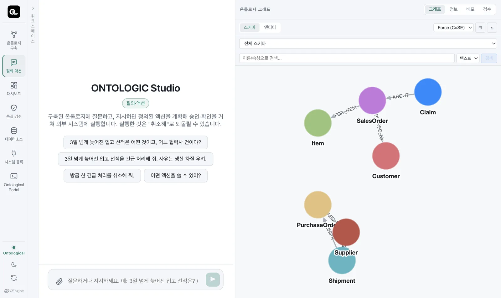
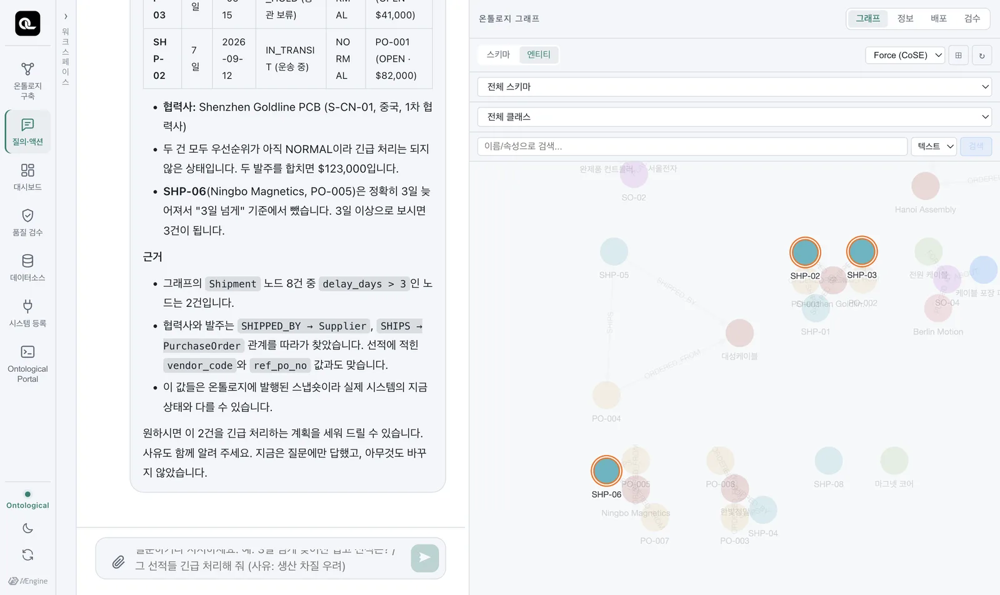

「질의·액션」 탭에서 온톨로지에 말로 묻고, 답에 붙은 근거를 읽는 법을 익힙니다. 예제 온톨로지 「공급망 운영 (예제)」로 실습합니다.
질의·액션 탭#
홈의 「질의·액션」 카드를 엽니다. 가운데에 예시 질문이, 오른쪽에 발행된 온톨로지의 그래프가 보입니다.

이 탭은 질문과 지시를 함께 받습니다. 질문하면 답하고, 지시하면 액션을 계획합니다(지시는 16장). 질문만 했을 때는 아무것도 바뀌지 않습니다.
물어보기#
예시 질문을 누르거나 직접 씁니다.
3일 넘게 늦어진 입고 선적은 어떤 것이고, 어느 협력사 건이야?
에이전트는 먼저 발행된 온톨로지의 스키마를 읽고, Cypher로 그래프를 조회해 답을 만듭니다(실측 약 30초). 오른쪽 그래프에서는 답에 쓰인 노드가 강조됩니다.

답을 읽는 법#
좋은 답에는 세 부분이 있습니다.
- 결론 — “3일 넘게 늦어진 선적은 SHP-03(9일)과 SHP-02(7일)로, 모두 Shenzhen Goldline PCB의 발주 건입니다.”
- 근거 — “그래프의
Shipment노드 8건 중delay_days > 3인 노드는 2건입니다. 협력사와 발주는SHIPPED_BY → Supplier,SHIPS → PurchaseOrder관계를 따라가 찾았습니다.” - 경계 — “SHP-06은 정확히 3일이라 ‘3일 넘게’ 기준에서 뺐습니다. 3일 이상으로 보시면 3건입니다.”, “지금은 질문에만 답했고, 아무것도 바꾸지 않았습니다.”
근거가 있으니 답을 검산할 수 있습니다. 같은 질문을 포털에서 Cypher로 쳐 보면 같은 결과가 나와야 합니다(8장).
MATCH (sh:Shipment)-[:SHIPS]->(po:PurchaseOrder)-[:ORDERED_FROM]->(s:Supplier)
WHERE sh.delay_days > 3
RETURN sh.shipment_no, sh.delay_days, po.po_id, s.name
질의 화면의 데이터는 ‘발행된 온톨로지’입니다
질의·액션 탭은 ontology 그래프의 발행된 온톨로지를 봅니다. 예제의 인스턴스는 처음 실행할 때 원천에서 읽어 적재한 것이라, 원천이 바뀐 직후에는 값이 다를 수 있습니다. 에이전트도 답에 “이 값들은 발행된 스냅숏이라 실제 시스템의 지금 상태와 다를 수 있다”고 적습니다. 액션이 바꾼 값(예: 선적 우선순위)은 실행할 때 온톨로지에도 되써 줍니다.
이어서 묻기#
같은 대화에서 이어 물으면 앞의 맥락을 씁니다.
그 협력사의 다른 미결 발주는?
PCB 납땜 불량 클레임은 어느 고객의 어떤 주문에서 나왔어?
두 번째 질문은 첫 질문과 전혀 다른 관계(Claim → SalesOrder → Customer)를 지나지만, 새로 설계할 것이 없습니다. 이미 있는 관계를 따라갈 뿐입니다 — 3장에서 말한 “다음 질문”의 힘입니다.
대화 관리#
- 레일의 「워크스페이스」를 펼치면 지난 대화 목록이 있고, 새 대화를 시작할 수 있습니다.
- 홈의 최근 항목에도 대화가 남습니다. 누르면 그 대화로 바로 갑니다.
- 문서를 끌어다 놓으면(📎) 대화에 첨부해 함께 물을 수 있습니다.
확인 문제
질의·액션 탭에서 다음을 물어보고, 답의 근거를 포털의 Cypher로 검산하세요.
- “Shenzhen Goldline PCB의 미결 발주는 무엇인가?”
- “PCB 납땜 불량 클레임은 어느 고객의 어떤 주문에서 나왔나?”
- “안전재고보다 재고가 적은 품목이 있어?” — 이 질문에 답이 나오나요? 안 나온다면 왜일까요?
정답 보기
- PO-001($82,000), PO-002($41,000). 검산:
MATCH (po:PurchaseOrder)-[:ORDERED_FROM]->(s:Supplier {name:'Shenzhen Goldline PCB'}) WHERE po.status = 'OPEN' RETURN po.po_id, po.amount_usd - Tokyo Devices의 판매 주문 SO-05 (클레임 T-3).
- 예제 온톨로지에는 일별 재고(
wms.stock_daily)가 클래스로 들어 있지 않으므로 에이전트는 “온톨로지에 재고 정보가 없다”고 답해야 맞습니다. 답에 필요한 개념이 없으면 구축 의도와 골든 퀘스천에 이 질문을 넣고 다시 구축하면 됩니다. 이것이 온톨로지가 자라는 방식입니다.